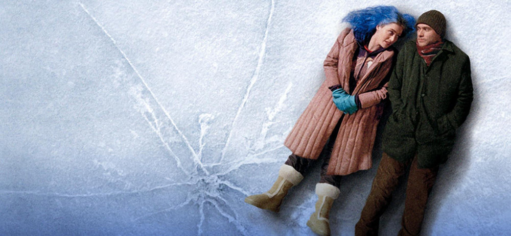

Eternal Sunshine of the Spotless Mind
Informazioni sul film
Regia: Michel Gondry
Attori: Jim Carrey, Kate Winslet, Kirsten Dunst, Tom Wilkinson, Elijah Wood, Mark Ruffalo, David Cross, Thomas J. Ryan, Jane Adams (II), Ryan Whitney, Debbon Ayer, Lola Daehler, Deirdre O'Connell, Amir Ali Said, Brian Price, Paul Litowsky, Josh Flitter, Gerry Robert Byrne
Genere: Romantico/Sci-fi
Anno: 2004
Durata: 1h 48m
Trama del film
Joel scopre che la sua fidanzata Clementine si è sottoposta a un esperimento psichiatrico per cancellare dalla sua memoria ogni traccia del tempo trascorso insieme a lui. Frustrato dall'idea di essere ancora innamorato di lei, che invece non vuole più saperne di lui tanto da volerlo eliminare dai suoi ricordi, decide di fare altrettanto e si reca presso lo studio del dott. Howard Mierzwaik, inventore del trattamento, per sottoporvisi. Una volta iniziato il processo di cancellazione però, Joel si rende conto che non è quel che vuole e comincia a nascondere i ricordi legati a Clementine mescolandoli con altri episodi del suo passato...
Riconoscimenti
Vincitore del premio Oscar per la miglior sceneggiatura ( ad opera del visionario Charlie Kaufman di Essere John Malkovich) e di due BAFTA per miglior sceneggiatura e miglior montaggio (capace di suscitare una vera tempesta emotiva nello spettatore)